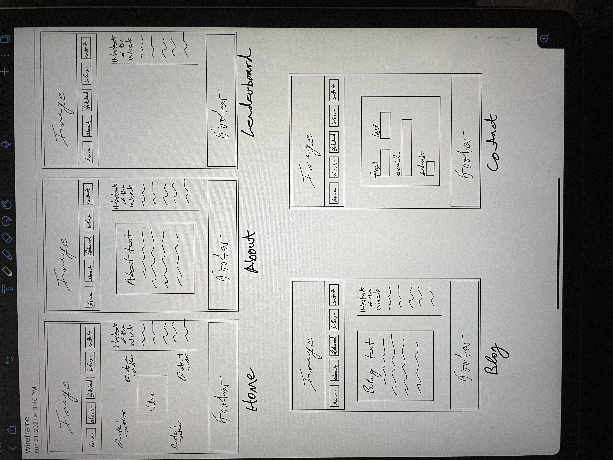
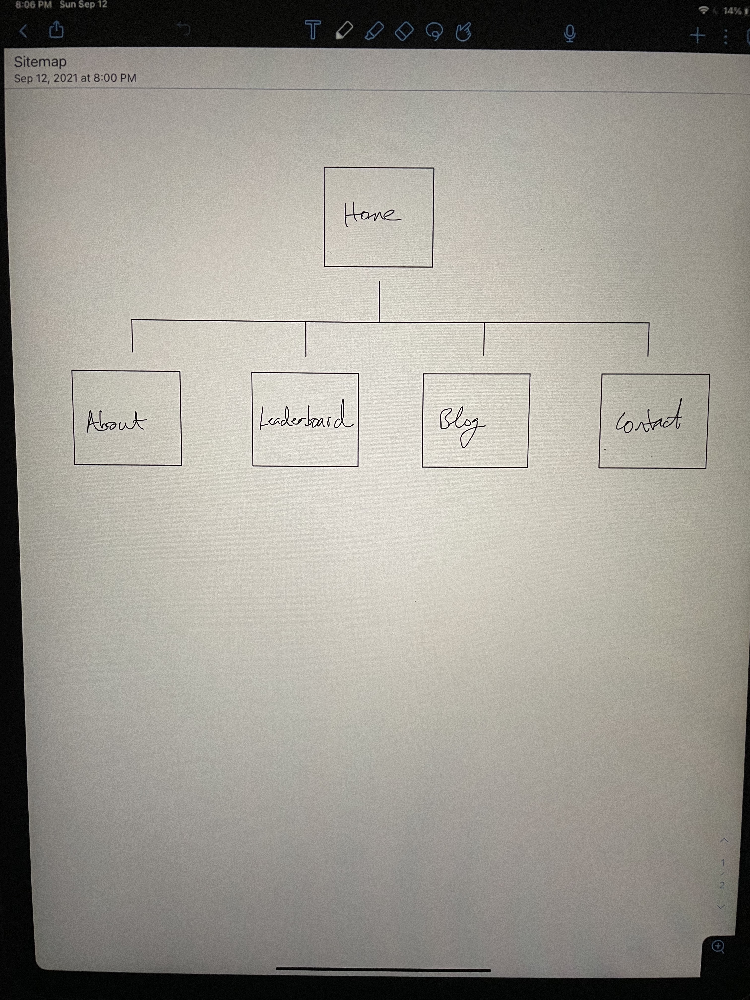

Report
- Introduction: What is the essential story being told by your site and what type of structure did you choose to implement?
- Inspiration: State 3 things that have inspired you when creating your website (e.g. guest speakers, websites, artists, blogs).
- Accessibility: State 3 ways in which your site is accessible to those with different abilities and needs (for example those with visual impairment)
- Usability: State 3 ways in which you considered the usability of your site.
- Learning: state 3 things you had to learn or find out to create your site. How did you achieve that?
- Evaluation I: What aspects of your work do you think were particularly successful? Why?
- Evaluation II: What aspects of your work could be improved? How might you do things differently another time?
- Resources: What resources did you use in your work? List any sources of information, libraries, plugins, code, or tools (you should also indicate inclusions from other sources within your code using comments)
- Appendices: Site map, wireframes, and mock-ups
1
My site is about a fitness group that trains members to improve their physical capacity to perform work (exercise). The group also holds fitness competitions to evaluate a persons work capacity. The structure I chose to implement was a minimal, responsive, uncluttered approach that made useful information easy to find.
2
I started by looking at how current fitness clubs layout their sites, in particular westlaathletics.com/, which I then modified to suit my needs and taste. I also drew from my previous experience in designing websites, in particular accidentalimpacts.org and moworkouts.com (which is also a web-app). Lastly and probably most important I chose this due to my background and interest in fitness. I have worked as a fitness instructor for many years and would potentially like to create a gym like this.
3
The image tags have relevant descriptions. The contrast is high, font size is large and it is responsive. I did not use color as a way to navigate through the site
4
I tried to make it as intuitive as possible. I tried to convey useful and relevant information. I took responsiveness into consideration
5
I had to learn how to implement a table that could be ordered by column. For that I used a library called datatables. I had to re-learn how to implement a bootstrap modal popup window. For that I looked at some old code I had written but mostly ended up discarding for bootstrap documentation. I had to re-learn how to set a cookie using javascript. For that I used W3C
6
I think my code and commenting came out a lot cleaner than on projects I have worked on in the past. I've mostly worked on projects by myself and when I go back to look at my code it's not always easy to understand. At least not as easy as it should be considering I wrote it.
7
For this project I think using my own images and videos would have made the site look more tailored to what I had in mind and not so generic.
8
Bootstrap - CSS, Modal, Forms
Instagram - Images
Pexels - Images
WAVE - Chrome extension - Accessibility checker
Youtube - Video (Hyrox)
JQuery - JS
W3C - Cookies, HTML validation
CloudTables - Datatables
9
Wireframes

Sitemap
Mockups


Responsive Mockups